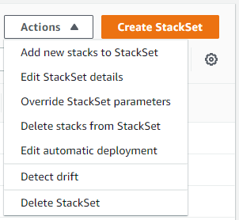

Terjemahan disediakan oleh mesin penerjemah. Jika konten terjemahan yang diberikan bertentangan dengan versi bahasa Inggris aslinya, utamakan versi bahasa Inggris.
Kelola deployment otomatis untuk set tumpukan dengan izin yang dikelola layanan
Dengan penerapan otomatis diaktifkan, StackSets secara otomatis menyebarkan ke akun yang ditambahkan ke organisasi target atau unit organisasi (OU) di masa mendatang. Dengan mempertahankan tumpukan diaktifkan, ketika akun dihapus dari OU target, sumber daya tumpukan di akun dipertahankan. Anda dapat menyesuaikan pengaturan deployment otomatis yang Anda tentukan saat Anda membuat set tumpukan Anda kapan saja.
catatan
Nilai parameter yang diganti hanya berlaku untuk akun yang saat ini ada di OU target dan OU anak mereka. Akun yang ditambahkan ke OU target dan OU anak di masa mendatang akan menggunakan nilai default set tumpukan dan bukan nilai yang ditimpa.
Topik
Kelola deployment otomatis menggunakan konsol AWS CloudFormation
-
Buka konsol AWS CloudFormation di https://console.aws.amazon.com/cloudformation.
. -
Dari panel navigasi, pilih StackSets.
-
Pada halaman StackSets, pilih set tumpukan yang Anda buat di Buat set tumpukan dengan izin yang dikelola layanan.
-
Dengan set tumpukan dipilih, pilih Edit deployment otomatis dari menu Tindakan. Deployment otomatis diatur pada tingkat set tumpukan. Anda tidak dapat menyesuaikan deployment otomatis secara selektif untuk OU, akun, atau Wilayah.
 -
Di modal Edit deployment otomatis, kelola Deployment otomatis dan pengaturan Perilaku penghapusan akun.

catatan
Dengan Pertahankan tumpukan dipilih, instans tumpukan dihapus dari set tumpukan Anda, tetapi tumpukan dan sumber daya yang berhubungan dipertahankan. Sumber daya tetap dalam statusnya saat ini, tetapi tidak lagi bagian dari set tumpukan.
-
Pilih Simpan.
Kelola deployment otomatis menggunakan AWS CLI
-
Buka AWS CLI.
-
Jalankan
update-stack-setperintah, tentukan kumpulan tumpukan yang Anda buat. Buat set tumpukan dengan izin yang dikelola layanan Deployment otomatis diatur pada tingkat set tumpukan. Jika Anda menentukan --auto-deployment dalam pembaruan set tumpukan Anda, Anda tidak dapat menentukan --deployment-targets atau --regions.aws cloudformation update-stack-set --stack-set-nameStackSet_myApp--auto-deployment Enabled=false -
Dengan menggunakan
operation-idyang dikembalikan sebagai bagian dari outputupdate-stack-setdi langkah 2, jalankandescribe-stack-set-operationuntuk memverifikasi bahwa set tumpukan Anda telah berhasil diperbarui.aws cloudformation describe-stack-set-operation --operation-idoperation_ID
Contoh deployment otomatis
Saat Anda mengaktifkan penerapan otomatis, penerapan akan dipicu saat akun ditambahkan ke organisasi target atau OU, dihapus dari organisasi target atau OU, atau dipindahkan di antara OU target.
Sebagai contoh, set tumpukan, StackSet1, menargetkan OU, OU1, di Wilayah us-east-1. Set tumpukan, StackSet2, menargetkan OU, OU2, di Wilayah us-east-1. OU1 berisi akun, AccountA.
Jika kita beralih AccountA dari OU1 ke OU2 dengan penerapan otomatis diaktifkan, StackSets secara otomatis menjalankan operasi hapus untuk menghapus StackSet1 instance dari AccountA dan mengantri operasi create yang menambahkan instance ke. StackSet2 AccountA